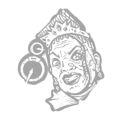

不留情面 No Quarter
所属：猎犬主人（杀手）
| 等级 | 档位 1 | 档位 2 | 档位 3 |
|---|---|---|---|
| 数值 | 20 1 | 25 | 30 |
描述
每一场小规模交锋都以排山倒海的炮火收场，谁技高一筹一目了然。 每当逃生者以任何方式自我治疗，且治疗进度达到 75% 时，便触发其效果：逃生者将面临接连不断的技能检定，直至自我治疗完成。若技能检定失败，或以任何方式中断该动作，便会受到破损状态效果的影响，持续 20/25/30 秒。 "再来一轮舷炮齐射！别停，直到大海把他们吞没！" —— 波西亚·梅伊